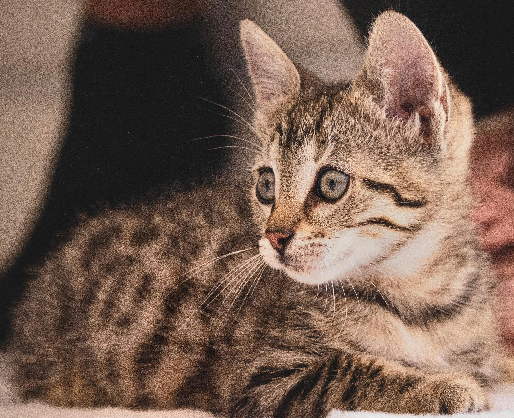

For those who are looking for a long-term stay, we have one of the best adoption processes. Simply walk in and choose a rescue. Some of our current favorites are shown below. If you have any questions or would like to rescue, please contact us.
Meet Liam, he loves going outdoors and choosing a nice stick to show you. He is an energetic dog that loves family time.
Meet Beacon, he is a bright parrot that loves to chirp. He likes his outdoor time, but is extremely friendly and will fly to those who call out to him.
Meet Pim, he is a young fellow who loves to sleep. His mom was very energetic, so we expect that of him, too. He is still very impressive and, for now, only likes those whom he chooses.

Meet Gadget, he is a nifty little cat who will claw his way into any crevice. He is very loving, but loves his alone time in little spots.